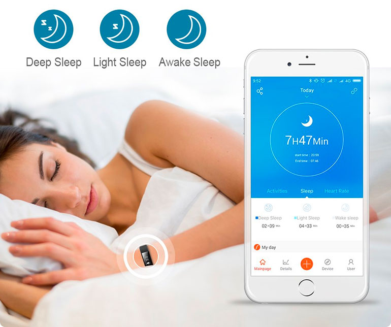

Are you trying to lead a more active lifestyle? Are you concerned that you're not getting enough exercise, or eager to track the improvements your current activity schedule is having on your health and wellbeing?
For many people, keeping track of how much exercise they've done, as well as measuring progress, can be a challenge. Without some way of measuring the impact your exercise is having, it's all too easy to end up skipping a workout now and again, or simply forgetting to complete the amount of activity you need for optimal wellbeing. In such circumstances, a fitness tracker can be a great option.
Introducing the ActiV8 Fitness Tracker
Designed to make your wellness journey easier, the ActiV8 activity tracker incorporates a range of features that gather information on your activity levels. Advanced technology and a wealth of data-gathering and interpreting options have been built into an easy-to-wear wristband. Attractive to look at, unisex and stylish, the wristband is also highly practical. Suitable for 24/7 use, whether you want to monitor your sleep, keep track of your exercise or tweak your weight loss routine, this smartwatch has the capacity to meet your requirements. Take a look at why a growing number of people are opting to take control of their fitness with a handy fitness tracker.
Track up to 14 different activities
Most people take part in a variety of different activities: from walking or running through to team sports, racket sports or fitness classes, this tracker allows you to gather data on each one. The data is collected through the wristband, with detailed analysis of each exercise available through the VeryfitPro App.
Monitor heart rate, calories burned and much more
Far more than simply a step counter, the ActiV8 collects all the information you need to make informed decisions about your exercise choices. The wristband collects data on calories burned, heart rate, miles covered, steps taken and sleep. This data not only allows you to track your progress on a daily basis but over time you can also spot longer-term trends. Collecting data regularly enables clear accountability and enables you to make appropriate adjustments to speed up progress towards your fitness goals. The information is presented in a clear, easy-to-understand format that's straight-forward to access and use.
Take advantage of the VeryfitPro App
Alongside the fitness tracker, you could also benefit from access to the VeryfitPro App. Designed to work with the tracker, information is uploaded on to the App. This allows getting access to longer-term trends to see how statistics have changed over time. The App is available in both Android and Apple formats and is included for FREE as part of the fitness tracker package.
Sedentary alarm and auto sleep tracking
Scientific research shows that it's not just the intensity of activity which is important to health, frequency is also a factor. Sitting for too long has been shown to potentially contribute to significant health issues. Make sure you don't lose track of your sitting time with the in-built sedentary alarm: your smartwatch will notify you when you've been inactive for a long period of time, letting you know when it's time to take a break from the screen and stretch your legs! In addition, automatic sleep tracking makes sure you're aware of whether you're getting enough rest - essential as part of any healthy lifestyle.
Automatic notifications and reminders
A barrier to fitness for many people is remembering to fit in sufficient exercise: the automatic notification feature on the wristband will generate texts or other alerts to let you know when it's time to prioritize your fitness! A great way of helping you stay on track, alerts can be customized to suit your particular schedule.
Waterproof, hardwearing design
Even if you're not engaged in outdoor pursuits or other high-risk activities, it's still important that a fitness tracker is practical enough to withstand life at the gym, out on the road, at work or during leisure activities. The ActiV8 features a tough, durable construction and is waterproof enough for use during rain or whilst at the gym. Note that the device isn't totally waterproof: no showering or swimming whilst wearing your activity tracker!
Integral USB Plug
Like any other device, the tracker needs periodic charging to keep it working well. Unlike some other devices, which require a lead, this tracker comes with an integral USB plug. This means it can be conveniently plugged into a laptop or similar, without the need to also carry a lead for it.
Who is the ActiV8 Fitness Tracker suitable for?
Anybody who is interested in maintaining their health & well-being is going to find this activity tracker of benefit. Because it can be customized to suit individual needs, it's as relevant to performance athletes seeking to push their limits as it is to people who simply want to make sure that they're optimizing their health through moderate, regular activity. A good option for people who want to monitor progress towards fitness goals, fitness tracker is a great addition to any fitness or health routine.
Choose the ActiV8 tracker and see the difference it makes
Many people are surprised by their activity levels (or lack of) once they start using a reliable tracking device to capture data continuously. If you're ready to take control of your fitness (or would like to gift the tracker to someone else to help them on their wellness journey), then the ActiV8 fitness tracker could be an excellent investment. Order your tracker now to start seeing the benefits.
ActiV8 is available for a limited time only, with exclusive offers and free shipping.